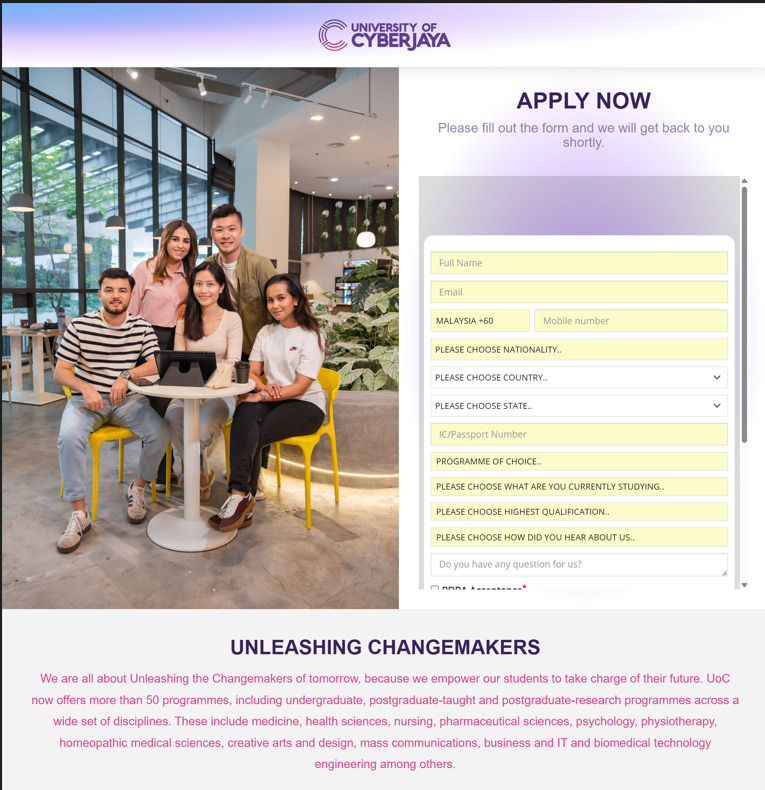

Landing Page Initiative
● Open to Opportunities
Senior Digital Marketing Executive
Results-driven Digital Marketing Executive with experience in managing multi-channel campaigns, optimizing conversion funnels, improving lead acquisition, and building scalable marketing systems through analytics, paid media, automation, and CRO.
Year-over-year lead growth
ROAS improvement
Lead engagement increase
Senior Digital Marketing Executive
Professional Summary
A results-driven digital marketer focused on lead generation, paid media performance, conversion funnel optimization, and data-led campaign decision-making.
I specialize in paid media, marketing automation, analytics setup, landing page optimization, CRO, campaign reporting, and full-funnel digital marketing strategy.
I deliver improved lead quality, stronger campaign efficiency, better attribution, higher engagement, and conversion-focused digital marketing systems.
Key Achievements
Managed annual paid media budgets across multiple digital channels with a focus on performance efficiency and lead quality.
Generated year-over-year lead growth through full-funnel optimization, campaign restructuring, and continuous performance improvement.
Reduced Cost per Lead by 10% through campaign optimization, budget refinement, and performance-based scaling.
Improved conversion rate by 8% through landing page UX testing, CRO improvements, and continuous iteration.
Increased ROAS by 17% through budget reallocation, audience refinement, and campaign performance scaling.
Improved lead engagement by 30% using automation, AI workflows, and faster lead response systems.
Professional Experience
Projects / Case Studies
Technical Skills
Managing performance campaigns across multiple advertising channels.
Improved ROAS by 17% through performance scaling.Building tracking systems for clearer attribution and reporting.
Improved campaign visibility and attribution accuracy.Automating lead engagement and improving follow-up efficiency.
Increased lead engagement by 30%.Developing conversion-focused landing pages and website experiences.
Improved conversion rate by 8% through UX testing.Improving organic visibility through keyword and on-page optimization.
Increased organic traffic by 20%.Producing campaign assets and improving workflows using creative tools.
Supported performance-focused digital campaign execution. Google Ads
Google Ads
 GA4
GA4
 GTM
GTM
Why Work With Me
I focus on growth metrics that matter, including lead quality, ROAS, CPL, conversion rate, and campaign efficiency.
I build cleaner analytics, tagging, attribution, and reporting systems so decisions are based on reliable performance data.
I can manage ads, landing pages, CRM forms, automation workflows, reporting dashboards, and campaign optimization directly.
Testimonials
“Kunalan brings a strong balance of campaign execution, tracking, automation, and performance-focused thinking.”
“He is hands-on with landing pages, analytics, and paid media, making him reliable across the full digital marketing funnel.”
“Kunalan focuses on measurable results and translates campaign data into clear actions for improvement.”
Education & Certifications
Bachelor in International Business (Hons)
Management and Science University
Diploma in Management
Management and Science University
Google Ads Search Certification
Google Digital Academy / Skillshop
The Fundamentals of Digital Marketing
Google Digital Garage
Social Media Marketing
HRDCorp
English – Professional Proficiency
Malay – Conversational Proficiency
Tamil – Professional Proficiency